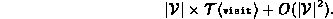
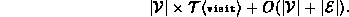

Data Structures and Algorithms
with Object-Oriented Design Patterns in Java
Data Structures and Algorithms
with Object-Oriented Design Patterns in JavaThe topological-order traversal enqueues each node in the graph at most once. When a node is dequeued, all the edges emanating from that node are considered. Therefore, a complete traversal enumerates every edge in the graph.
The worst-case running time for the traversal of a graph represented using an adjacency matrix is

When adjacency lists are used, the worst case running time for the topological-order traversal method is

 Copyright © 1998 by Bruno R. Preiss, P.Eng. All rights reserved.
Copyright © 1998 by Bruno R. Preiss, P.Eng. All rights reserved.